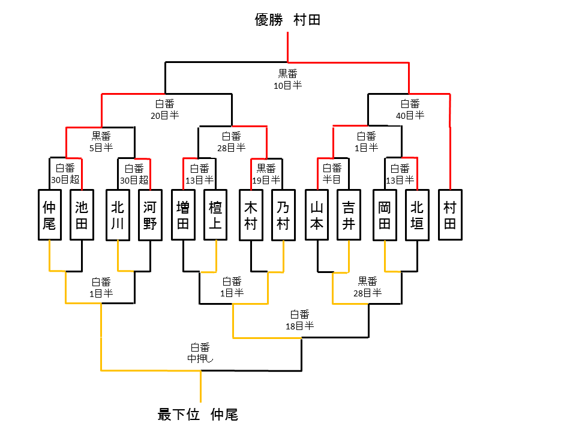

2013年5月2日(木) 13時～16時
囲碁（9路盤）
トーナメント形式
手合割 ）先番6目半コミ出し
先後 ）対局ごとにニギリで決定
持ち時間 ）5分 + 30秒(1回) （決勝と逆決勝のみ，10分+30秒(1回)）
乃村 能成，
池田 騰，木村 有祐，吉井 英人，
北川 初音，檀上 未来，仲尾 和祥，村田 裕哉，
岡田 卓也，北垣 千拡，河野 達生，増田 陽介，山本 凌平
| 1位 | 村田 裕哉 |
| 2位 | 池田 騰 |
| 3位 | 木村 有祐，山本 凌平 |
| 5位 | 河野 達生，増田 陽介，北垣 千拡 |
| 8位 | 北川 初音，檀上 未来，岡田 卓也 |
| 11位 | 吉井 英人 |
| 12位 | 乃村 能成 |
| 13位 | 仲尾 和祥 |
トーナメント表（敬称略）

決勝戦と逆決勝戦のみ，棋譜を残しています．
棋譜はSGF形式で，ファイルには棋譜とともにコメントを残しています．
SGF形式の棋譜を見るには，
CGoban3
をダウンロードし，SGFファイル編集を選択してください．